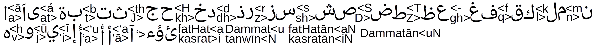

Reversible mechanistic transliterator
With both decent phonetic output and Arabic preservation.
| Arabic | MCB notation | Standard notation |
|---|---|---|
| حُضُورٌ | HuDūruN | ḥuḍūruṇ |
| جَوٌّ | JavvuN | jawwuṇ |

Latin output
Transliteration output
Highlights and notation
Green: protected text.Letters touching digits, such as H2O, CO2 and m1, are protected. Certain isolated symbols, such as (P) and °C, are also preserved.
Yellow: possible missing vowels.Three or more consecutive consonants in Arabic-to-Latin output may indicate missing vowel marks. This is a hint, not a spelling correction.
Red: unmapped text.Unrecognized characters stay in the output so nothing is silently lost. Copying includes the text, without highlights.
Notation.Standard mode uses w/y and ḥ/ṣ/ḍ/ṭ/ẓ/j in both directions. MCB mode uses v/j and H/S/D/T/Z/J. Standard mode writes tanwin as ṇ; ordinary ن stays n. MCB mode keeps tanwin N. The distinct á stays unchanged. Standard mode writes ع as ʿ; MCB mode uses a hyphen. Hamza keeps its apostrophe ('). A plain hyphen is also accepted for ع in Standard mode.